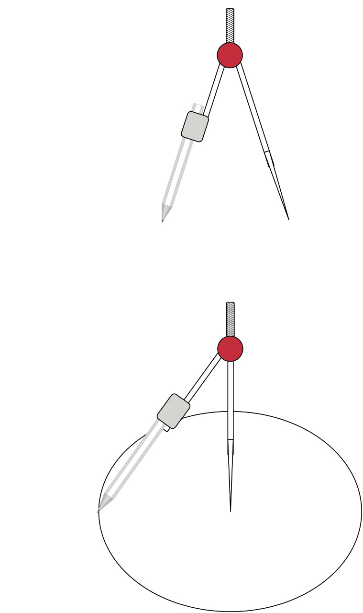
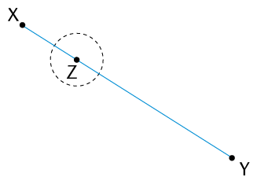
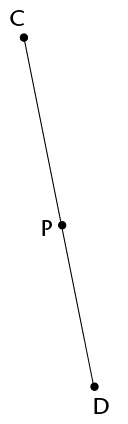
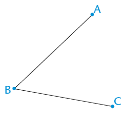
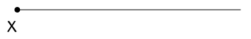

Konstruksie van meetkundige figure
 loodlyne geleer.
- Gebruik jou passer en trek twee sirkels van
verskillende groottes wat oorvleuel.
- Trek 'n lyn deur die punte waar die sirkels mekaar
sny.
- Trek 'n lyn om die middelpunte van die sirkels met
mekaar te verbind.
- Gebruik jou gradeboog en meet die
hoeke tussen die snylyne.
- Wat kan jy oor die snylyne sê?
Lynstuk MN met punt P op 'n afstand daarvan af word vir jou gegee. Jy moet 'n lyn konstrueer wat loodreg op MN is, sodat die loodlyn deur punt P gaan.

Stap 1
Gebruik jou passer om 'n sirkel te trek waarvan die middelpunt die een eindpunt van die lynstuk (N) is en deur punt (P) gaan.

Stap 2
Herhaal stap 1, maar maak die ander eindpunt van die lynstuk (M) die middelpunt van jou sirkel.

Stap 3
Verbind die punte waar die sirkels sny: PQ ⟂ MN

Lynstuk XY met punt Z daarop word vir jou gegee. Jy moet 'n loodlyn konstrueer wat deur Z gaan.

Stap 1
Gebruik jou passer om 'n sirkel met middelpunt Z te trek. Maak sy radius kleiner as ZX. Let op die twee punte waar die sirkel XY sny.

Stap 2
Stel jou passer wyer as wat dit was vir die sirkel met middelpunt Z. Trek twee ewe groot sirkels met middelpunte by die twee punte waar die eerste (swart) sirkel XY sny. Die twee sirkels (groen) sal oorvleuel.

Stap 3
Verbind die snypunte van die twee oorvleuelende sirkels. Merk hierdie punte C en D: CD ⟂ XY en gaan deur punt Z.



Om 'n hoek te halveer beteken om dit in twee ewe groot hoeke te verdeel.
\(A\hat{B}C\) word vir jou gegee. Jy moet die hoek halveer.

Stap 1
Trek 'n sirkel met
middelpunt B om sodoende gelyke lengtes op albei bene
van die hoek af te merk.
Merk die snypunte D en E: DB =
BE.

Stap 2
Trek twee ewe groot
sirkels met middelpunte by D
en by E. Maak seker die
sirkels oorvleuel.

Stap 3
Trek 'n lyn van B af deur die punte waar die twee ewe groot sirkels sny. Hierdie lyn sal \(A\hat{B}C\) halveer.


Kan jy verduidelik waarom die metode hier bo werk om 'n hoek te halveer?
Kan jy ook sien dat ons nie volle sirkels hoef te teken nie, maar bloot dele van sirkels (boë) kan gebruik om die konstruksie hier bo te doen?
Wenk: Verleng die lynstuk na die linkerkant van X.
- Die sirkels is ewe groot.
- Elke sirkel gaan deur die ander sirkel se middelpunt.
- Die sirkels se middelpunte is A en B gemerk.
- Die snypunte van die sirkels is D en E gemerk.
Die tekening hier regs dien as ân voorbeeld.


|
Hoek |
Veelvoude kleiner as 360\(^\circ\) |
Hoek |
Veelvoude kleiner as 360\(^\circ\) |
|
30\(^\circ\) |
30\(^\circ\); 60\(^\circ\); 90\(^\circ\); 120\(^\circ\); 150\(^\circ\); 180\(^\circ\); 210\(^\circ\); 240\(^\circ\); 270\(^\circ\); 300\(^\circ\); 330\(^\circ\) |
45\(^\circ\) |
|
|
60\(^\circ\) |
90\(^\circ\) |
120\(^\circ\)
135\(^\circ\)
270\(^\circ\)
240\(^\circ\)
150\(^\circ\)

- Halveer elk van die hoeke van die skerphoekige driehoek hier onder.
- Verleng elk van die halveerlyne na die teenoorstaande sy van die driehoek
- Wat sien jy raak?
- Doen dieselfde met die stomphoekige driehoek.
- Wat sien jy raak?

Jy behoort te gevind het dat die drie halveerlyne van die hoeke van 'n driehoek in een punt sny. Hierdie punt is dieselfde afstand van elke sy van die driehoek af.
'n Binnehoek is 'n hoek wat tussen twee sye van 'n driehoek lê. Dit is binne-in die driehoek. 'n Driehoek het drie binnehoeke.
'n Buitehoek is 'n hoek tussen 'n sy van 'n driehoek en 'n ander sy wat verleng word. Dit is buite die gegewe driehoek.
teenoorstaande binnehoeke, soos in die volgende tabel beskryf word.
Buitehoek
Aangrensende binnehoek
Teenoorstaande binnehoeke
1
\(x\)
\(z\) and \(y\)
2
\(y\)
\(x\) en \(z\)
3
\(z\)
\(x\) en \(y\)


|
Buite \(\angle\) |
|||||
|
Teenoorst. binne \(\angle\)e |

- Skryf die name van die binnehoeke van die driehoek neer.
- SAangesien 'n driehoek drie sye het wat
in albei rigtings verleng kan word, is daar twee buitehoeke by
elke hoekpunt. Skryf die name van al die buitehoeke neer.
- Verduidelik waarom \(M\hat{B}L\) nie
'n buitehoek van
\(\triangle\)ABC is nie.
- Skryf twee ander hoeke neer wat nie
binnehoeke of buitehoeke is nie.

\(L\hat{M}N + M\hat{L}N = \)
Die buitehoek van 'n driehoek is gelyk aan die som van die teenoorstaande binnehoeke.


- As drie sye gegee word:sy, sy, sy (SSS): \(\triangle\)DEF met DE = 7 cm, DF = 6 cm en EF = 5 cm.
- As drie hoeke gegee word: hoek, hoek, hoek (HHH): \(\triangle\)ABC met \(\hat{A} = 80^\circ\), \(\hat{B} = 60^\circ\) en \(\hat{C} = 40^\circ\)
- As een sy en twee hoeke gegee word: sy, hoek, hoek (SHH): \(\triangle\)GHI met \(\text{GH} = 8 \text{ cm}\), \(\hat{G} = 60^\circ\) en \(\hat{H} = 30^\circ\)
- As twee sye en ân ingeslote hoek gegee word: sy, hoek, sy (SHS): \(\triangle\)JKL met JK =9 cm, \(\hat{K}=\) 130\(^\circ\) en KL = 7 cm.
- As twee sye en ân hoek wat nie ingesluit is nie gegee word: sy, sy, hoek (SSH): \(\triangle\)MNP met MN = 10 cm, \(\hat{M}=\) = 50\(^\circ\) en PN = 8 cm.
- As ân regte hoek, die skuinssy en ân sy gegee word(90°SS) \(\triangle\)TRS met TR \(\perp\) RS, RS = 7 cm en TS = 8 cm.
- Driehoek UVW met UV = 6 cm en VW = 4 cm.
|
Stap 1 Konstrueer MN = 10 cm en die 50\(^\circ\) hoek by M, al weet jy nie wat die lengte van die onbekende sy (MP) is nie.
|
Stap 2 \(\hat{N}\) onbekend, maar NP = 8 cm. Konstrueer dus ân boog 8 cm van N af. Elke punt op die boog is 8 cm van N af.
|
|
Stap 3 Punt P moet 8 cm van N af wees en op die onbekende sy van die driehoek val. Die boog sny die derde sy by twee punte, so P kan by enige punt wees. Twee driehoeke is dus moontlik en albei voldoen aan die gegewe voorwaardes, d.w.s. MN = 10 cm, NP = 8 cm en \(\hat{M}\) = 50\(^\circ\).  |
|


|
Voorwaardes |
Kongruent |
|
3 sye (SSS) |
|
|
2 sye (SS) |
|
|
3 hoeke (HHH) |
|
|
2 hoeke en ân sy (HHS) |
|
|
2 sye en ân hoek nie tussen die sye nie (SSH) |
|
|
2 sye en ân hoek tussen die sye (SHS) |
|
|
Reghoekig met die skuinssy en ân sy (90°SS) |

'n Middelloodlyn is 'n lyn wat 'n ander lyn teen 'n regte hoek (90\(^\circ\)) in die helfte sny.


|
Vierhoek |
Hoeklyne gelyk |
Hoeklyne halveer |
Hoeklyne sny teen 90\(^\circ\) |
|
Parallelogram |
|||
|
Reghoek |
|||
|
Vierkant |
- Trek hoeklyne in om elk van die ander veelhoeke hier onder in so min driehoeke as moontlik te verdeel.
- Skryf die getal driehoeke in elke veelhoek neer.

|
Aantal \(\triangle\)e |
2 |
||
|
Som van \(\angle\)e |
\(2 \times 180^\circ = 360^\circ\) |

|
Aantal \(\triangle\)e |
|||
|
Som van \(\angle\)e |
- Die som van die hoeke van een driehoek
= 180\(^\circ\). ân Vierhoek bestaan uit twee driehoeke, so die som van die hoeke in ân vierhoek =
\(2 \times 180^\circ = 360^\circ\). Werk die som van die binnehoeke van elk van die ander veelhoeke hier bo uit.
- Pas die woorde in die regterkolom
by die definisies in die linkerkolom. Skryf die letter van die
definisie langs die bypassende woord neer.
(a) 'n Vierhoek met hoeklyne wat loodreg op mekaar is en wat mekaar halveer
Vlieër
(b)'n Vierhoek met hoeklyne wat loodreg op mekaar is maar net een van die hoeklyne halveer die ander een
Kongruent
(c) 'n Vierhoek wat ewe lang hoeklyne het wat mekaar halveer
Buitehoek
(d) Figure wat presies dieselfde grootte en vorm het
Ruit
(e) In die helfte sny
Loodlyne
(f) 'n Hoek wat buite 'n geslote figuur gevorm word: dit is tussen 'n sy en 'n verlengde sy van die figuur
Halveer
(g) Lyne wat mekaar teen 'n hoek van 90\(^\circ\) sny
Spesiale hoeke
(h) 90\(^\circ\), 45\(^\circ\), 30\(^\circ\), 60\(^\circ\)
Reghoek
- Voltooi die sin: Die buitehoek van 'n driehoek is gelyk aan ________________
-
- Konstrueer \(\triangle\)PQR met hoeke van 30\(^\circ\) en 60\(^\circ\). Die sy tussen die hoeke moet 8 cm wees. Jy mag net 'n liniaal en 'n passer gebruik.
- Sal alle driehoeke met dieselfde afmetings hier bo kongruent wees aan
\(\triangle\)PQR? Verduidelik jou antwoord.